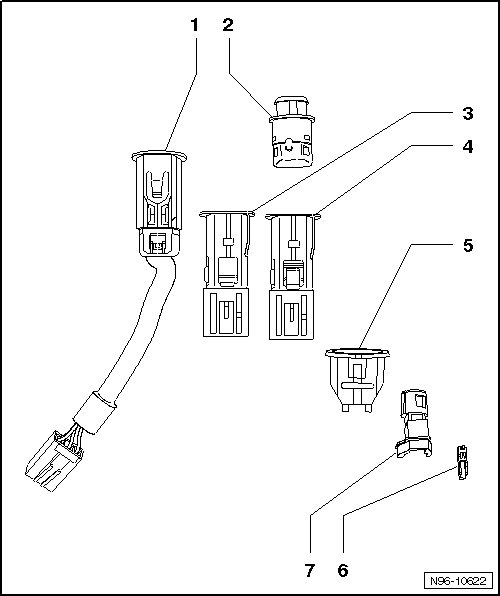

Cigarette Lighter Assembly Overview
Cigarette Lighter Assembly Overview
CAUTION!
Using force to remove cigarette lighter sockets without illumination can result in damage to the mounting sleeve retainers.
The puller T40148 can only be used to remove cigarette lighter sockets with illumination.
The puller is not capable of releasing the retainers on power sockets without illumination.
Power sockets without illumination usually cannot be removed without damage.

1 Cigarette Lighter Receptacle with Cable Pig Tail
2 Cigarette Lighter
3 Power Outlet Receptacle
4 Cigarette Lighter Receptacle
5 Mounting Sleeve
6 Bulb W5 12V, 1.2 Watt
7 Bulb Holder